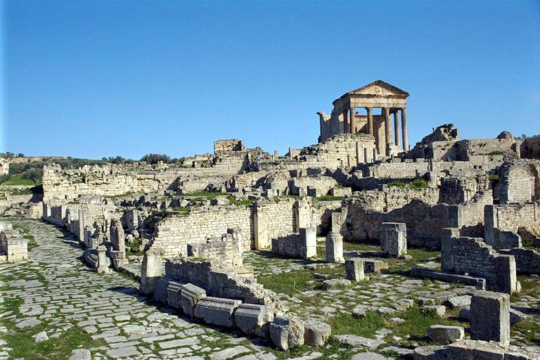
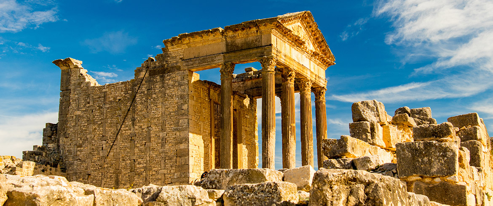
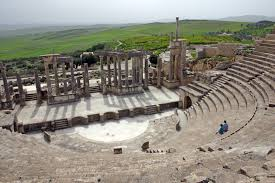
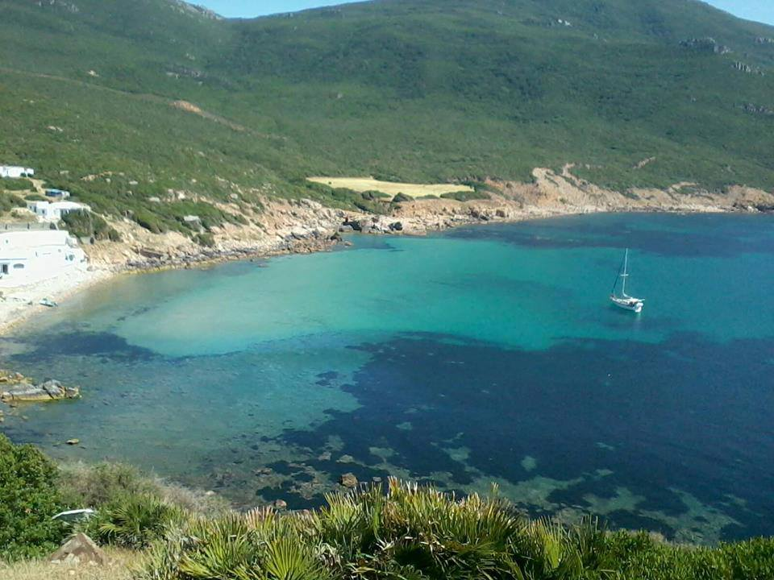
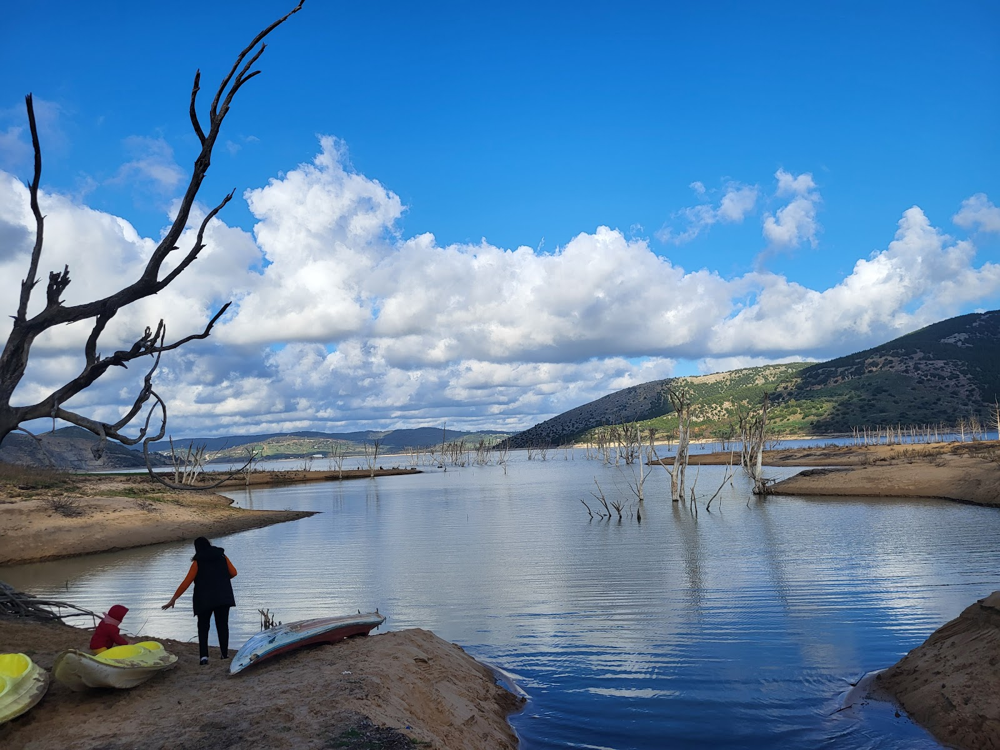
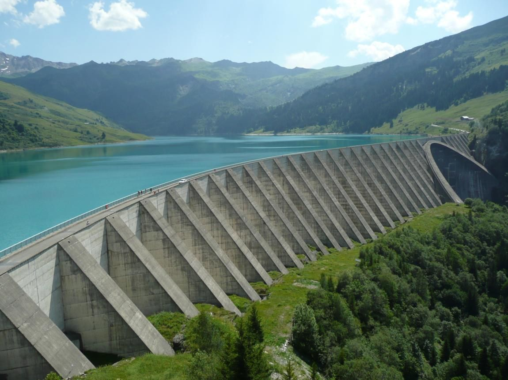

Béja
La Capitale du Nord-Ouest - Entre Histoire et Nature
À propos de Béja
Le Gouvernorat de Béja est une région située dans le nord-ouest de la Tunisie, réputée pour être le "grenier de la Tunisie" en raison de son activité agricole prédominante, notamment la culture des céréales..
Emplacement
Béja est située dans l'arrière-pays, à environ 100 kilomètres à l'ouest de la capitale, Tunis. Elle est idéalement placée sur l'axe principal reliant Tunis à l'Algérie, dans une zone de collines fertiles (le Tell tunisien). La région est traversée par l'importante Mejerda, le plus long fleuve du pays.
Histoire
L'histoire de Béja est riche et remonte à l'Antiquité, sous le nom de Vaga. Elle fut un important comptoir commercial et une ville prospère sous la domination carthaginoise, puis romaine. Salloque était un point stratégique majeur. La ville a été le théâtre de nombreux événements historiques, notamment lors des guerres puniques, et a conservé des vestiges de ces époques. Son importance stratégique s'est maintenue à travers les époques byzantine, arabe et ottomane.
Caractéristiques
- Capitale Agricole : La principale caractéristique de Béja est son rôle central dans l'agriculture tunisienne. Ses terres fertiles la désignent comme le cœur de la production céréalière nationale (blé, orge).
- Patrimoine Architectural : La ville de Béja est célèbre pour sa Casbah (citadelle) historique, perchée sur une colline, qui domine la ville moderne et offre une vue panoramique sur la région.
- Fromage Local : Béja est également réputée dans tout le pays pour son fromage artisanal, considéré comme une spécialité locale appréciée.
- La région est un carrefour culturel, avec une identité rurale forte et une vie locale animée, notamment ses marchés hebdomadaires colorés.
Top Places à Visiter
1. Site Archéologique de Dougga
Classé au patrimoine mondial de l'UNESCO, Dougga est considéré comme l'un des sites romains les mieux préservés d'Afrique du Nord. Vous pouvez y explorer de vastes ruines, notamment un magnifique Capitole, un théâtre romain, des thermes et un mausolée punico-libyen. Le site offre une vue panoramique imprenable sur la vallée fertile de la Mejerda.



2.La Casbah de Béja
Cette forteresse historique, dont les origines remontent à l'époque romaine et qui a été renforcée durant les périodes byzantine et islamique, domine la ville depuis une colline. Elle offre une vue panoramique sur la ville et ses environs, et constitue un point de repère emblématique de l'histoire locale.
.jpg)
.jpg)
3.Le Pont Cinquième (Fifth Bridge)
Cet ouvrage d'art emblématique, datant de l'époque coloniale, enjambe l'Oued Béja. Entouré de champs de tournesols, c'est un lieu pittoresque prisé pour la photographie et les pique-niques.
.jpg)
4. La Grande Mosquée de Testour
Située dans la ville voisine de Testour, cette mosquée est célèbre pour son architecture unique d'influence andalouse. Son minaret octogonal distinctif présente une horloge dont les aiguilles tournent dans le sens inverse des aiguilles d'une montre, un symbole fascinant du patrimoine andalou de la région.
.jpg)
5. Barrage de Sidi el Barrak et Cap Negro
Le gouvernorat abrite l'un des plus grands barrages de Tunisie, offrant de beaux paysages et des possibilités d'activités de plein air comme le kayak. À proximité, Cap Negro offre des plages tranquilles où la forêt rencontre la mer Méditerranée, un véritable havre de paix.



.jpg)
- Dar Beja Restaurant : Un établissement local très apprécié pour sa cuisine tunisienne authentique et ses spécialités régionales. Le service est souvent salué pour sa gentillesse, et les plats comme le Ftet y sont excellents.
- Borj Lella : Situé en pleine nature, cet endroit offre une expérience unique avec un menu souvent unique mettant en vedette des produits locaux, notamment leur propre fromage fait maison (spécialité de la région de Béja). Le cadre est magnifique et le service impeccable.
- Henchir el Bey : Un autre lieu de restauration en pleine nature, apprécié pour son accueil chaleureux et ses plats traditionnels de Béja, généreux et délicieux. Le cadre rural et calme est un atout majeur.
- Café Jasmin : Un café local populaire, ouvert 24h/24, apprécié pour son ambiance et son service rapide. C'est un bon endroit pour un arrêt rapide thé ou café.
- Le moulin vert : Ce café bénéficie d'un emplacement pittoresque avec une vue sur le fameux Pont Cinquième de Béja. Le cadre est très beau et l'accueil y est chaleureux.
- Albero cafe restaurant : : Un lieu qui fait à la fois café et restaurant, offrant un endroit confortable pour se détendre entre amis ou en famille, avec un service rapide et de bonnes boissons.